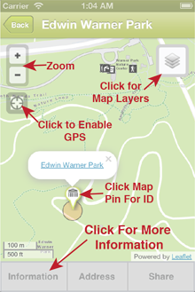
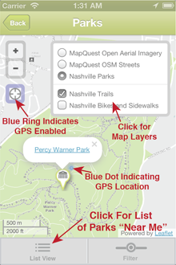

The design of this mobile app emphasizes simplicity in its navigation scheme. The main page of the app is broken into eight distinct categories. Clicking on these buttons navigate the user to the next level, where these categories are either further broken down into more specific categories or lead directly to a map view showing locations “Near Me”, a list of News & Events, or a window containing detailed information about the app.
The subcategories for each of the primary categories are self-explanatory and displayed in a scrollable table. Clicking on these table rows either lead the user to a map view showing the locations on a basemap of Davidson County or an informational page. At the bottom on the map views are additional options, which include List View and Filter. The List View displays the name of the feature and its approximate distance relative to your current location. The Filter allows for the user to refine the displayed features by distance from their current location.
Detailed information for each of the displayed features can be obtained by either clicking on the map pin and hyperlink within the popup or by directly selecting the feature from the table. Once a feature has been selected, its name appears on the title bar at the top of the screen and three buttons appear at the bottom of the screen, which provide access to additional information. The Information button provides detailed information for each of the features. The Address button provides the user with the address, when available, and an option to obtain directions from an external service. The Share button provides access to a future feature that will integrate social networks for sharing information regarding your experience.
The map view has several features that need further clarification. In the upper left corner of the window are two buttons with a (+) and (-), which are used to zoom in or out on the map. The button with crosshairs located below these buttons enables the GPS and will make the map zoom to your current location. If the GPS is enabled, there will be a blue ring around this button. If enabled, the GPS may restrict your ability to navigate or zoom on the map. The user can disable the GPS by clicking the button again, which will allow full navigation of the map. In the upper right corner of the window is a button with a stackable layer icon, which provides access to additional layers such as aerial imagery, bike lanes and sidewalks, or additional basemaps. Clicking on these listed layers will activate them and the popup box will disappear by moving or clicking on the map.
